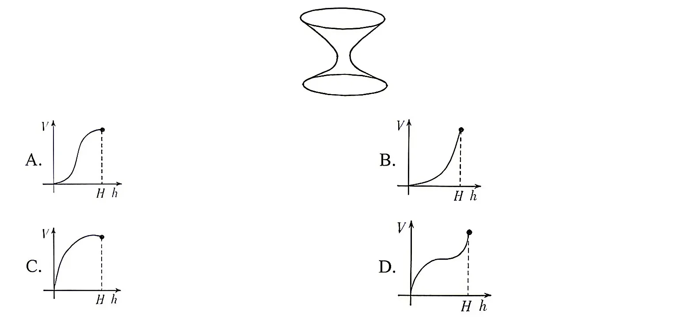
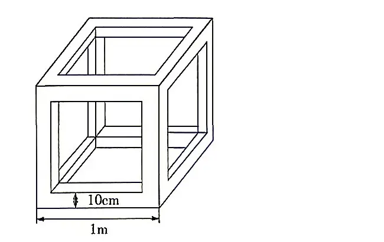
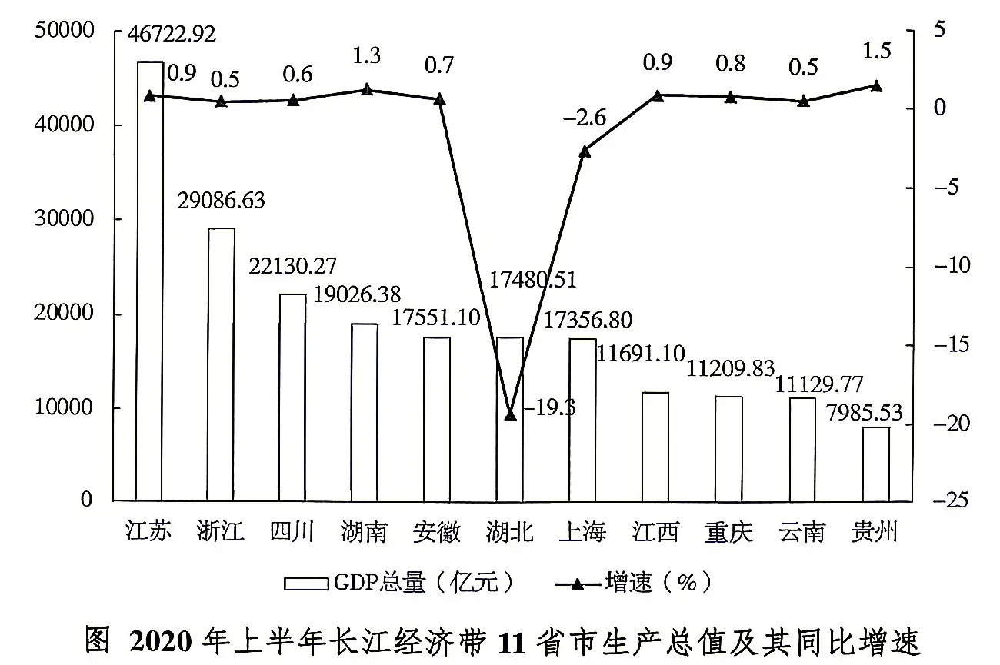
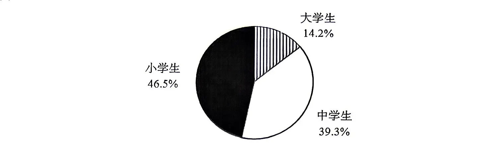
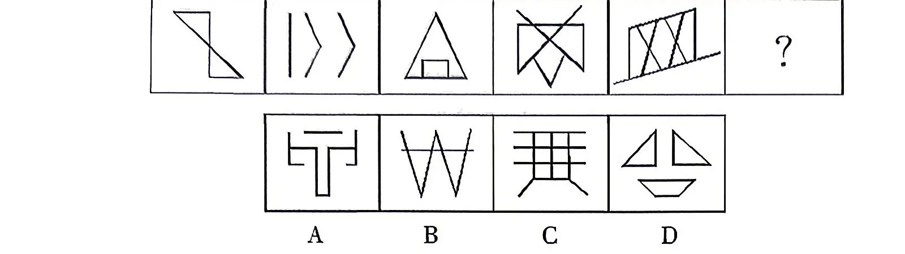
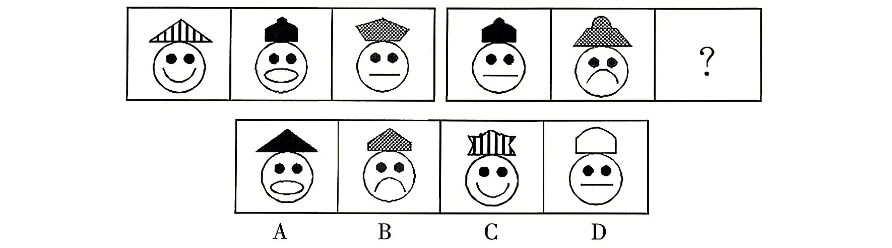
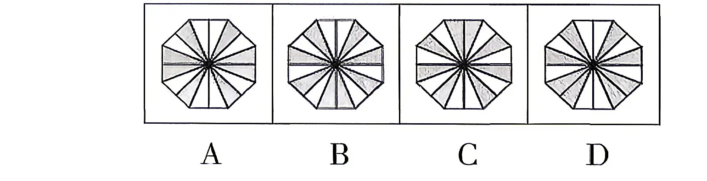
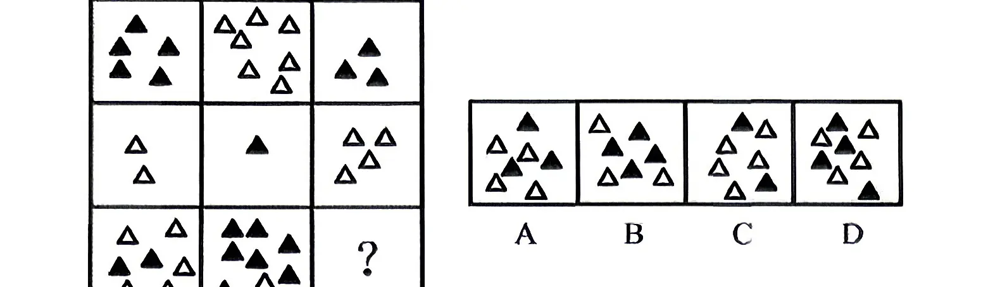
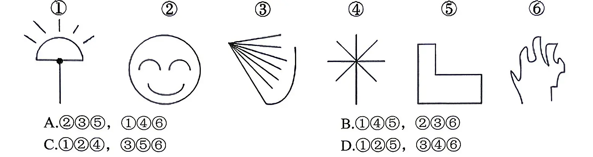
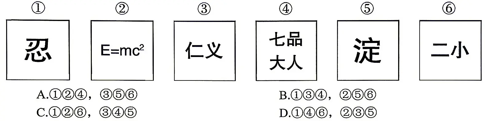

习近平总书记强调，在五千多年中华文明深厚基础上开辟和发展中国特色社会主义“两个结合”，关于后半个结合，下列理解正确的有（）。
①“结合”的前提是彼此契合，马克思主义和中华优秀传统文化彼此存在高度契合性
②“结合”的结果是互相成就，造就了一个有机统一的新的文化生命体
③“结合”筑牢了道路根基，让中国特色社会主义道路有了更加宏阔深远的历史纵深
④“结合”打开了创新空间，让我们在被动顺应中迎来思想和文化的繁荣
⑤“结合”巩固文化主体性，创立新时代中国特色社会主义思想就是这一文化主体性的最有力体现
A.5 项 B.4 项 C.3 项 D.2 项
新型举国体制是当前我国推动关键核心技术攻关、实现高水平科技自立自强的重要法宝。“十五五”规划建议明确提出，完善新型举国体制，采取超常规措施，全链条推动集成电路、工业母机等重点领域关键核心技术攻关取得决定性突破。上述材料表明（）。
A.主要矛盾对事物发展起决定作用，要集中力量解决主要矛盾
B.新事物在本质上优越于旧事物，要把握事物新陈代谢的规律
C.内因是事物发展变化的根据，应着重抓住事物发展的内部矛盾
D.整体功能大于部分功能之和，部分应服从和服务于整体
2026年7月1日，中共中央发布关于授予“七一勋章”的决定。本次“七一勋章”提名建议人选主要事迹对应正确的有（）。
①吴亚琴，30年来扎根基层治理一线，践行新时代“枫桥经验”，探索实行“四步议事”、“社区工作36法”等社区治理先进做法
②陈俊武，投身石油石化事业70余载，担任我国首套流化催化裂化装置总设计师，推动我国炼油工业从落后走向世界前列
③赵亚夫，从“一五”到“十五五”，始终奋战在科研一线，解决高性能铝热轧板规模化生产难题，攻克多项行业“卡脖子”难题，推动我国铝加工技术走在世界前列
④钟掘，探索出“党支部+合作社+农户”的戴庄经验，累计推广农业新品种新技术350多万亩
A.1 项 B.2 项 C.3 项 D.4 项
党的十八大以来，我们积极探索新时代金融发展规律，不断加深对中国特色社会主义金融本质的认识，不断推进金融实践创新、理论创新、制度创新，积累了宝贵经验，逐步走出一条中国特色金融发展之路。经验包括（）等。
①坚持党中央对金融工作的集中统一领导
②坚持以人民为中心的价值取向
③坚持把金融服务工业经济作为根本宗旨
④坚持把发展作为金融工作的永恒主题
⑤坚持深化金融供给侧结构性改革
A.2 项 B.3 项 C.4 项 D.5 项
敢于斗争、敢于胜利，是中共党人鲜明的政治品格。党的百年奋斗史，就是一部伟大斗争史，我们党一路走来就是在斗争中求得生存、获得发展、赢得胜利。全党同志要发扬斗争精神，提高斗争本领，坚决战胜前进道路上的各种困难，依靠顽强斗争，打开事业发展新天地。根据唯物辩证法，以上论述表明（）。
A.矛盾是事物发展的源泉和动力 B.只有斗争性才能推动事物发展 C.对立统一规律是辩证法的核心 D.矛盾的斗争性推动事物的发展
下列关于我国的主要矛盾变化，说法错误的有几项（）。
①中国特色社会主义新时代人民日益增长的美好生活需要和不平衡不充分的发展之间的矛盾
②改革开放和社会主义现代化建设新时期——人民对于经济文化迅速发展的需要同当前经济文化不能满足人民需要的状况之间的矛盾
③社会主义革命和建设时期——帝国主义和中华民族的矛盾、封建主义和人民大众的矛盾
④新民主主义革命时期人民日益增长的物质文化需要同落后的社会生产之间的矛盾
A.1 项 B.2 项 C.3 项 D.4 项
文化建设是中国特色社会主义事业总体布局的重要组成部分。中国特色社会主义文化是当代中国的先进文化。下列关于中国特色社会主义文化建设表述错误的是（ ）。
A.中国特色社会主义文化建设的中心环节是加强文化体制改革
B.中国特色社会主义文化建设，包括思想道德建设和科学文化建设两个基本方面
C.中国特色社会主义文化建设的指导思想是马克思主义
D.教育和科学是中国特色社会主义文化建设的重要内容
我国国家制度和国家治理体系具有多方面的显著优势，其中最大优势是中国共产党领导。这一优势是带有统领性的根本优势，贯穿于中国特色社会主义制度和国家治理体系其他方面显著优势中。中国共产党的领导是中国特色社会主义制度的最大优势，是因为（）。
①中国共产党的自身优势是中国特色社会主义制度优势的主要来源
②中国共产党能够集中全党全国力量并在各项事业中发挥总揽全局、协调各方的作用
③中国共产党以马克思主义作为行动指南，在实践中不断推进马克思主义中国化时代化
④中国共产党的领导是新时代坚持和发展中国特色社会主义的根本动力
A.①③④ B.①②④ C.①②③ D.②③④
下列属于抽象行政行为的是（）。
A.交警对违反交通规则的机动车驾驶人处以100元罚款
B.市教育局对某中学教师违反师德师风的行为进行通报批评
C.市卫生健康委员会对患有严重传染病的张某进行强制隔离
D.市公安局在某道路入口立了署名告示：“8：00-20：00非本市车辆禁止通行”
下列文言文中的“固”与“固若金汤”的“固”同义的是（）。
A.人固有一死，或重于泰山，或轻于鸿毛 B.至于颠覆，理固宜然 C.汝心之固，固不可彻 D.荆州与国邻接，江山险固
关于生活常识，下列表述不正确的是（）。
A.空腹吃进大量柿子，会与胃酸凝结成块，形成柿石，引起胃痛、呕吐
B.煮肉时，把肉放入热水中煮则汤味鲜美，放在冷水里慢慢煮则肉味鲜美
C.吃过大蒜后，喝杯牛奶，可减少大蒜残留在口中的异味
D.自来水中含有氯，煮饭时它会破坏粮食中所含的维生素B1
北宋文化吸纳此前数千年的历史积淀，皮毛落尽，精神独存，不仅各个文化领域、各类文化形式、各种雅俗文化百花齐放，更以________的北宋文化精神卓然自立。苏轼诗歌正是在北宋这一特定历史时期的文化背景下孕育成长起来的。填入画横线部分最恰当的一项是：
A.特立独行 B.积厚流光 C.海纳百川 D.独树一帜
近代以来仁人志士在向西方学习的过程中，陷入“拿来主义”“本本主义”，这缘于救亡图存的历史任务下不得不采取的________的实用心态，从根本上来说，是文化不成熟、文明不独立的表现。立足21世纪，中国思想文化成熟的标志，就在于中华文明主体性之独立立场的确立，这种立场使得中国哲人以自己的头脑去探究、分析、判断西方的各种概念理论，拒绝________，摆脱学徒状态。填入画横线部分最恰当的一项是：
A.急功近利 人云亦云 B.无可奈何 照猫画虎 C.经世致用 亦步亦趋 D.急于求成 如法炮制
中国文化________且富有当代活力，无论人文历史还是景观风貌，都是向设计师敞开的宝库，都可以融汇到当代服饰设计中。踏入宝山富矿，能否________，取决于设计师文化“内功”的高低。设计师要深入包括服饰文化在内的中华优秀传统文化中去，以当代视野提炼中华美学精神和设计理念，以国际通行的设计语言加以________。填入画横线部分最恰当的一项是：
A.源远流长 满载而归 呈现 B.生生不息 披沙拣金 阐释 C.历久弥新 不虚此行 展现 D.波澜壮阔 慧眼识珠 解释
产业扶贫不是________，而是一项打赢脱贫攻坚战的根本之策，来不得半点马虎。在产业扶贫进程中，干部不能“三分钟热度”，必须________，防止急躁冒进，不能图光鲜而________，不能只顾眼前利益而热衷于“短平快”的项目，严防“被脱贫”“假脱贫”“数字脱贫”等现象，杜绝“造盆景式”的作秀扶贫，正确处理好当前利益和长远利益的平衡关系。
填入画横线部分最恰当的一项是：
A.权宜之计 久久为功 投机取巧 B.突发奇想 按部就班 好高骛远 C.心血来潮 步步为营 弄虚作假 D.徒托空言 持之以恒 贪多求全
如今人们对自然灾害的监测方式越来越先进，应对自然灾害的手段越来越多样，但监测的准确性在对自然灾害的预测中仍然十分重要，人们在监测自然灾害时，往往会面临很多干扰。科研人员会通过用卫星监测森林中亮点的方式监测森林火灾，但有时人们难以从卫星图上直观判断亮点是由于火灾形成的，还是由于太阳光反射形成的；科研人员可以通过监测地震波进行地震预警，但放炮、建筑工地施工等行为也会产生地震波。如何以最快的速度识别并排除干扰，成为自然灾害监测需要解决的一大问题，这就需要人工智能等技术排除掉人类活动或其他因素产生的干扰信号，以减少误报。这段文字意在说明：
A.提升自然灾害监测准确率需人工智能助力 B.目前自然灾害的监测手段存在多方面不足 C.无干扰监测是准确预测自然灾害的前提条件 D.人工智能在干扰信号识别排除领域大有可为
尽管现代微观层面的医学研究，可能更多展现的是专业而严谨理性的科学，但当我们细致地梳理近代以来医疗卫生史，就会发现现代医学发展和公共卫生关注的重点并不只是人类最重要的健康问题或疾病威胁，可能就因此更能真切体会到医学和卫生的社会文化性。不仅如此，医学作为具有强烈实践性的学科，其实践目标具有明显的历史道德感和伦理性，从历史的梳理中，我们很容易感受到，当代医生的职业道德和伦理，绝非仅用当下的经济关系和科学理性能够解释。诚如一位医史学家所感受到的：“医学有着独特的社会功能、道德史以及身份认同感。”这段文字意在说明：
A.研究医疗史有利于发现现代医学的社会文化因素 B.可以从更宏观的历史角度来研究现代医学的发展 C.疾病医疗史研究有助于人们全面理解医学的属性 D.现代医学中与“人”相关的文化因素不应被忽略
现代音乐当中包括多种不同风格的音乐，包括摇滚乐、电子音乐、说唱等，这些音乐风格比较现代化，富有浓厚的现代气息，年龄较大的受众长期听戏曲、民歌等民族音乐，对现代音乐风格接受度偏低，音乐创作者们为了使现代音乐拥有多种受众，积极寻求民族音乐与现代音乐的融合。然而，在这一过程中创作出的许多音乐作品，都过于注重对多种受众群体的吸引，刻意追求民族音乐与现代音乐的表面融合，而忽视了歌曲本身的内涵和意境，使得两种音乐融合的作品尽管流行速度快、传唱度高，但呈现出“口水化”趋势，无法将民族音乐中蕴含的民族文化展现出来。这段文字意在说明：
A.民族音乐与现代音乐的融合作品缺乏文化内涵 B.现代音乐是推动民族音乐向前发展的重要动力 C.流行音乐在大众性和文化性方面往往顾此失彼 D.民族音乐与现代音乐融合过程陷入一定的困境
建设现代化经济体系是我国发展的战略目标，消费税改革也要支撑和服务于这一目标的实现。我国的消费税制度是在1994年的分税制改革中建立起来的一种流转税制度，随着经济社会发展，现行消费税制度出现了一些与建设现代化经济体系不相适应的情况。随着供给侧结构性改革持续推进，制造业更重视差异化生产、匹配个性化需求，原有的一体化产业链被分割；创新驱动发展推动了价值链重构，企业随之进行调整，价值被大量转移到生产环节，导致应税价值量增长和税负差异化，同时价值链分布环节调整导致税负上升，造成现行消费税制度不适应推动创新驱动发展的需要……这段文字接下来最不可能讲的是：
A.深入研究现行消费税制度改革的发展导向 B.我国现行消费税功能扩展及机制创新问题 C.现代化经济体系下消费税制度的改进策略 D.适应现代经济发展的消费税制的具体定制
军事理论创新的根本目的在于服务军事实践，解决军队建设和未来作战中的现实问题。马克思主义哲学认为，理论问题在本质上都是实践问题，在理论与实践的关系上，实践是客观存在，理论是对客观存在的认识，实践是第一性的。因此，，理论才会不断保持其强大的生命力，才能有效发挥好其军队建设发展动力源泉的作用。军事理论创新，既要下大力气解决当前面临的现实问题，为正在进行的实践服务，也要着眼未来发展，进行具有前瞻性的理论创新，即要处理好理论创新的直接目的与长远效益关系。填入画横线部分最恰当的一项是：
A.只有坚定不移地将军事实践摆在首位 B.处理好军事理论与军事实践的辩证关系 C.只有始终紧紧围绕军事实践开展创新活动 D.打通从实践到理论、再从理论到实践的闭环回路
根据指标对痴呆预测模型的重要性，机器学习算法排列并筛选出了十个痴呆预测因子，分别是年龄、载脂蛋白E（ApoE）基因、认知配对测试时长、腿部脂肪百分比、服药数量、认知反应测试时长、呼气峰流量、母亲死亡年龄、慢性疾病和平均红细胞体积。AUC值是对患者发病概率进行预估时最常用的指标，AUC值越接近1.0代表着检测方法预测的精度越高，模型的效果越好。研究显示，UKB-DRP痴呆预测模型对全因痴呆的预测 AUC 值为 0.85，而对阿尔茨海默病的预测 AUC值可达0.86—0.89。UKB-DRP痴呆预测模型的效能比现有的其他预测模型更为精准。同时，这些预测因子能够在基层医疗机构中便捷获取，具有较广的应用前景。关于这段文字说法正确的是：
A.直系亲属的死亡年龄和疾病史是痴呆预测的因子之一
B.AUC值是在预估痴呆患者发病概率时使用频率最高的指标
C.UKB-DRP痴呆预测模型选取的预测因子比其他模型更科学合理
D.UKB-DRP痴呆预测模型因其准确性和便利性而更易被推广接受
众所周知，宋代文献以传世史籍为主，一直较为缺乏新文献资料的发现，地方行政档案极为稀缺。元代虽因黑水城文献的出土，新发现了一定数量的地方行政公文，但又限于亦集乃路这西北一隅，所体现出的行政制度并不具有普遍性。明代虽有内阁大库档案、辽东档案和徽州文书等大宗档案文献传世，但前二种主要是明代中央各部及地方省一级的衙署档案，后一种则主要是民间私人文契档案，之间缺少了州、县等地方行政机构这一环节的公文档案资料。因此，纸背文献的地方性特点，可极大弥补宋元明时期传世档案中地方基层行政公文档案不足的缺环，________填入画横线部分最恰当的一项是：
A.对其展开研究，可以推进学人对宋元明时期相关问题研究的深入
B.使宋元明时期的文献资料更加丰富从而对历史信息的掌握更准确
C.为研究地方治理及行政运转问题提供一大批宝贵的原始档案史料
D.而这些地方性的公文多由府州县地方行政机构或官员撰拟、攒造
①中国是欧亚大陆东侧农业起源的中心，距今8000多年前，形成了成熟的新石器时代考古学文化
②与此同时，在周边地区形成了各具特色的文化适应。它们共同构成了中华文明形成的文化生态格局
③中华文明植根于一个独立的文化体系
④因此，考察史前农业的起源与发展是探索文明进程的合理路径，也是历史唯物主义的应用
⑤世界史前文明三大体系，分别对应三大史前农业起源中心及其扩散地带
⑥在此基础上，发展形成不同的区域文化系统，它们共同构成早期中国文明的框架，也就是后来早期中国文化互动圈的核心
将以上6个句子重新排列，语序正确的是：
A.⑤④③①②⑥ B.⑤①③④②⑥ C.③①②⑥⑤④ D.③⑤④①⑥②
某市财政局下设若干处室，在局机关中不是宣传处的有206人，不是会计处的有177人，已知宣传处与会计处共有41人，问该市财政局共有多少人？
A.212 B.224 C.236 D.248
某公司每月成本比上月增加10万元，收入比上月增加20%。已知该公司今年1月亏损了10万元，2月亏损了8万元，则该公司在今年几月可以第一次实现盈利？
A.3 B.4 C.5 D.6
如图所示，向高度为H的水瓶中注水，注满为止，下列反映注水量V与水深h的函数关系正确的是：

某企业计划招聘一批新员工，有65%的应聘者通过笔试，在面试环节有20人被淘汰，最终录取的人数占总应聘人数的40%，企业将录取的新员工分成若干个小组进行业务培训，每个小组的人数都不相同，每组至少2人。问至多可以分成多少个组？
A.7 B.8 C.5 D.6
在一条公路上每隔10里有一个集散地，共有5个集散地，其中一号集散地有旅客10人，三号集散地有25人，五号集散地有45人，其余两个集散地没有人。如果把所有人集中到一个集散地，那么，所有旅客所走的总里数最少是：
A.1100 B.900 C.800 D.700
甲和乙走完A、B 两地之间的距离分别需要120 分钟和X 分钟。某日甲从A 地出发前往B地，1小时后乙从B地出发前往A地，两人到达目的地后都立即折返。若甲和乙前两次相遇都是迎面相遇，则X的取值范围为：
A.30<X<150 B.30<X<180 C.40<X<150 D.40<X<180
幼儿园老师设计了一个摸彩球游戏，在一个不透明的盒子里混放着红、黄两种颜色的小球，它们除了颜色不同，形状、大小均一致。已知随机摸取一个小球，摸到红球的概率为1/3。如果从中先取出3红7黄共10个小球，再随机摸取一个小球，此时摸到红球的概率变为2/5，那么原来盒中共有红球多少个？
A.5 B.10 C.15 D.20
将一块边长为1米的正方体石材挖空制成下图所示的工艺品，其每个棱的宽度都是0.1米。将该工艺品的整个表面进行磨光处理，每平方厘米的磨光费用为1元。问：磨光总费用在以下哪个范围内？

A.不到3万元 B.3 万~3.5 万元 C.3.5 万~4万元 D.4万元以上
复分解反应是两种化合物在水溶液中交换离子，结合成难电离的沉淀、气体或弱电解质（最常见的为水），使溶液中离子浓度降低，化学反应向着离子浓度降低的方向进行的反应。即两种化合物互相交换成分，生成另外两种化合物的反应。根据以上定义，下列选项发生了复分解反应的是：
A.植物通过光合作用把二氧化碳和水转化成葡萄糖和氧气 B.堆放在空气里的块状生石灰会跟水反应变为氢氧化钙 C.胃酸过多的人通过服用胃舒平（氢氧化铝）缓解症状 D.长期存放的碳铵肥料（碳酸氢铵）分解为二氧化碳、氨和水
虚假同感偏差又叫作虚假一致性偏差，是指人们常常高估或夸大自己的信念、判断及行为的普遍性，它是人们坚信自己信念、判断正确性的一种方式。根据上述定义，下列不属于虚假同感偏差的是：
A.他以为别人都是善良的 B.这个青椒很好吃，我特意给你点的 C.我是他的粉丝，我同学肯定也很喜欢他 D.我支持这个做法，反对的人脑子不正常
虚拟人力资源管理是指以合作关系为基础，充分利用现代信息网络技术，帮助企业获取、发展和筹划智力和劳力资本的一种人力资源管理办法，它可以满足企业管理虚拟化发展的要求，将大量的人力资源管理活动外部化或由员工实现自主管理，企业从而可以将主要精力放在核心人力资源管理方面，提高人力资源管理效率。根据上述定义，下列选项不属于虚拟人力资源管理的是：
A.小李和同事都被公司派到某职业学校培训半年 B.某集团将其全部广告交由同一家广告公司设计 C.某企业通过猎头公司物色到一位产品研发专家 D.某公司委托劳动派遣公司负责分发员工的薪酬
调查：发言权
A.中毒：死亡 B.批评：进步 C.损害：赔偿 D.锻炼：健康
表 2012-2013 年我国专利情况（数值据原表逐格核对）
| 指标 | 受理量（件） | 授权量（件） | ||
|---|---|---|---|---|
| 2012 年 | 2013 年 | 2012 年 | 2013 年 | |
| 发明 | 652777 | 825136 | 217105 | 207688 |
| 国内 | 535313 | 704936 | 143847 | 143535 |
| 职务 | 428427 | 571073 | 125954 | 126860 |
| 大专院校 | 75688 | 98509 | 33821 | 33309 |
| 科研单位 | 29518 | 36582 | 11248 | 12284 |
| 企业 | 316414 | 426544 | 78651 | 79439 |
| 机关团体 | 6807 | 9438 | 2234 | 1828 |
| 非职务 | 106886 | 133863 | 17893 | 16675 |
| 实用新型 | 740290 | 892362 | 571175 | 692845 |
| 国内 | 734437 | 885226 | 566750 | 686208 |
| 职务 | 512203 | 633446 | 410763 | 512203 |
| 大专院校 | 39999 | 55997 | 33389 | 43085 |
| 科研单位 | 12786 | 14360 | 7754 | 11319 |
| 企业 | 450002 | 551056 | 359990 | 451662 |
| 机关团体 | 9416 | 12033 | 9630 | 6137 |
| 非职务 | 222234 | 251780 | 155987 | 174005 |
| 外观设计 | 657582 | 659563 | 466858 | 412467 |
| 国内 | 642401 | 644398 | 452629 | 398670 |
| 职务 | 352686 | 350551 | 262217 | 233534 |
| 大专院校 | 16961 | 13150 | 10073 | 8644 |
| 科研单位 | 2815 | 2090 | 850 | 1275 |
| 企业 | 330804 | 332458 | 246879 | 221575 |
| 机关团体 | 2106 | 2853 | 4415 | 2040 |
| 非职务 | 289715 | 293847 | 190412 | 165136 |
2013年，我国三种专利授权量同比增长约：
A.4.6% B.-4.6% C.5.7% D.-5.7%
2020 年上半年，长江经济带 11 省市地区生产总值合计 211370.84 亿元，占全国经济总量的 46.3%，在湖北遭受疫情损失巨大的情况下，占比仍较上年同期提升 1.2 个百分点，有力支撑全国经济回暖。
2020 年上半年，长江经济带 11 省市地区生产总值增速均比一季度有不同幅度回升，除湖北（-19.3%）、上海（-2.6%）负增长且低于全国水平（-1.6%）外，其余 9 省市均实现正增长。上年同期湖北地区生产总值同比增速为 8.0%。
贵州地区生产总值比上年同期增长 1.5%，高于长江经济带（除湖北）平均水平 1.0 个百分点，连续 38 个季度位居全国前列，位居长江经济带 11 省市首位。
图 2020 年上半年长江经济带 11 省市生产总值及其同比增速（保留卷面原图）

2020年上半年，下列各地区生产总值按照同比增量从高到低排列，正确的是：
A.江西>重庆>云南>贵州 B.江西>贵州>重庆>云南 C.贵州>重庆>江西>云南 D.贵州>江西>重庆>云南
关于2020年上半年，长江经济带11省市地区生产总值的相关描述，能够从上述资料中推出的是：
A.长江经济带11 省市地区生产总值同比增长 0.5%
B.长江经济带11 省市中所有直辖市的地区生产总值占比不足一成
C.江苏地区生产总值占长江经济带11 省市的比重同比上升
D.长江经济带11 省市地区生产总值同比增长率高于全国水平的有5个
2018 年末浙江省常住人口为 5737.0 万人，与 2017 年末常住人口 5657.0 万人相比，增加 80 万人。常住人口中，出生人口为 62.8 万人，死亡人口为 31.8 万人，自然增加人口为 31 万人。
2018 年末全省常住人口中，0-15 岁的人口为 831.9 万人，占比为 14.5%，比上年下降 0.1 个百分点；16-59 岁的人口为 3780.7 万人，占比为 65.9%，比上年下降 0.6 个百分点；60 岁及以上的人口为 1124.4 万人，占比为 19.6%，比上年上升 0.7 个百分点。其中 65 岁及以上人口为 780.2 万人，占比为 13.6%，比上年上升 0.6 个百分点。
2018 年浙江省各级在校生人数占常住人口的比例为 13.51%，比上年上升 0.07 个百分点。
表 2013-2018 年浙江省常住人口自然变动情况（单位：万人；数值据原表逐格核对）
| 年末常住人口 | 出生人口 | 死亡人口 | |
|---|---|---|---|
| 2013 年 | 5498.0 | 54.9 | 29.9 |
| 2014 年 | 5508.0 | 57.8 | 30.3 |
| 2015 年 | 5539.0 | 58.1 | 30.4 |
| 2016 年 | 5590.0 | 62.4 | 30.7 |
| 2017 年 | 5657.0 | 67.0 | 31.3 |
| 2018 年 | 5737.0 | 62.8 | 31.8 |
图 2018 年浙江省大中小学生人数占在校生人数比例（保留卷面原图）

注：人口自然增长率＝（年内出生人口数－年内死亡人口数）÷年平均人口数×1000‰。
年平均人口数＝（年初人口数＋年末人口数）÷2。
2017年末浙江省常住人口中，出生人口的同比增量约比死亡人口多：
A.6.7 倍 B.7.7倍 C.8.4 倍 D.9.4 倍
能够从上述资料中推出的是：
A.2017年末浙江省60-64岁人口数占全省常住人口数的比重超过6%
B.2017年末浙江省常住人口中，16-59岁的人口超过3700万人
C.2014-2018年末，浙江省出生人口数同比增速逐年降低
D.2018年末浙江省常住人口中，小学生比中学生约多367万人
2017 年，某省全省园林水果面积 1987.30 万亩，比上年增长 4.8%。其中，苹果的挂果面积为726.21 万亩，同比增长 4.1%；梨的挂果面积为 61.29 万亩，同比增长-1.0%；柑橘的挂果面积为 40.26 万亩，同比增长 4.5%；桃的挂果面积为 45.05 万亩，同比增长 5.8%；猕猴桃的挂果面积为 64.76 万亩，同比增长 10.8%；葡萄的挂果面积为 54.05 万亩，同比增长 3.5%；枣的挂果面积为 262.74 万亩，同比增长 12.6%；柿子的挂果面积为 37.80 万亩，同比增长 0.4%；杏的挂果面积为 45.42 万亩，同比增长 4.1%；石榴的挂果面积为 6.51 万亩，同比增长 4.7%；樱桃的挂果面积为 10.92 万亩，同比增长 10.4%。
2017 年，该省全省园林水果产量 1801.02 万吨，增长 5.1%。其中，苹果的产量为 1153.94 万吨，同比增长 4.8%；梨的产量为 110.37 万吨，同比增长 5.9%；柑橘的产量为 54.06 万吨，同比增长 5.9%；桃的产量为 84.61 万吨，同比增长 7.4%；猕猴桃的产量为 138.97 万吨，同比增长 5.9%；葡萄的产量为 68.15 万吨，同比增长 3.2%；枣的产量为 87.23 万吨，同比增长 5.0%；柿子的产量为 40.63 万吨，同比增长 6.3%；杏的产量为 20.21 万吨，同比增长3.2%；石榴的产量为 10.34 万吨，同比增长 7.9%；樱桃的产量为 13.66 万吨，同比增长 7.3%。
根据上述资料，下列说法中不正确的一项是：
A.2017年，共有5种水果的单位面积产量同比有所降低
B.2017年，单位面积产量及同比增速均最低的水果是同一种水果
C.2016年，单位面积产量低于柿子的水果仅有两种
D.2016年，单位面积产量从高到低的水果排序是苹果、柑橘、葡萄、樱桃
某消费者以200元的价格购买了一件运动衣，经检测这件运动衣是假冒产品，按照《消费者权益保护法》的规定，经营者应当向消费者额外赔偿（）。
A.200 元 B.400元 C.600 元 D.800 元
某地十几家投资担保公司出现“抱团跑路”的现象，涉案金额最高逾千万元，民间投资借贷问题引发各方面关注，下列有利于防范和化解民间投资借贷危机的措施是( )。
A.实施适度从紧的货币政策，保障企业的资金 B.加大对民间投资借贷的监管，依法打击非法集资 C.实施积极的财政政策，直接为困难企业注入资本 D.提高存款准备金率，缓解民营企业贷款难问题
下列古诗中，描述中国传统节日元宵节的是（）。
A.众里寻他千百度，蓦然回首，那人却在，灯火阑珊处 B.春城无处不飞花，寒食东风御柳斜 C.独在异乡为异客，每逢佳节倍思亲 D.爆竹声中一岁除，春风送暖入屠苏
唐诗是中华民族珍贵的文化遗产之一，是中华文化宝库中的一颗明珠，同时也对世界上许多国家的文化发展产生了很大影响。下列关于诗句、诗名与诗人，对应错误的是（）。
A.月落乌啼霜满天，江枫渔火对愁眠——《枫桥夜泊》——韩愈
B.江东子弟多才俊，卷土重来未可知——《题乌江亭》——杜牧
C.长安大道连狭斜，青牛白马七香车——《长安古意》——卢照邻
D.千载琵琶作胡语，分明怨恨曲中论——《咏怀古迹》——杜甫
话语体系特别是话语能力的提升亟须充足的知识供给、概念供给。当前构建中国话语体系的主要________是“概念短缺”问题：中国特色社会主义走出了一条自己的路，在党的执政能力、社会主义市场经济、全过程人民民主、生态文明等方面积累了丰富的经验，但当需要理论概念上的________时，便会出现既定的西方知识型、概念体系与生动的中国经验、中国现实的________问题。填入画横线部分最恰当的一项是：
A.掣肘 诠释 兼容性 B.困难 解读 融合性 C.障碍 演绎 一致性 D.限制 定义 共通性
某部门8名身高各不相同的员工一起排练合唱节目。要求8人排成两排，前后人员对齐，但要求后排的每个人要比站其前面的那个人高，以不被挡住。则这8人的站位方法有多少种？
A.1260 B.1860 C.2520 D.2640
A、B 两台高性能计算机共同运行 30 小时可以完成某个计算任务。如果两台计算机共同运行 18 小时后，A、B 计算机分别抽调出 20%和 50%的计算资源去执行其他任务，最后任务完成的时间会比预计时间晚 6 小时。如果两台计算机运行 18 小时后，由 B 计算机单独运行，还需要多少小时才能完成该任务？
A.22 B.24 C.27 D.30
从所给四个选项中，选择最合适的一个填入问号处，使之呈现一定规律性：

请从所给的四个选项中，选择最合适的一个填在问号处，使之呈现一定的规律性。

下列选项中，与其他三项不同的是：

从所给的四个选项中，选择最合适的一个填入问号处，使之呈现一定的规律性。

把下面的图形分为两类，使每一类图形都有各自的共同特征或规律，分类正确的一项是：

把下面的六个图形分为两类，使每一类图形都有各自的共同特征或规律，分类正确的一项是：

敝姓：舍间：拙笔
A.愚见：见教：华诞 B.过誉：垂青：玉体 C.薄礼：承让：借光 D.小生：台甫：承蒙
S 国反对页岩气开采的人认为，页岩气开采所使用的水力压裂技术可能诱发地震，造成温室气体泄漏，回注的废水会污染地下水，从而导致页岩气开采地区的环境恶化。然而事实并非如此，以M国为例，自20世纪90年代后期实现页岩气革命以来，并未出现与页岩气开采有关的地震、温室气体泄漏和地下水污染。下列哪一项如果为真，最能强有力地支持上述论证？
A.从总体上看，M国页岩气开采地区与没有开采地区的环境质量基本一样
B.不排除未来一段时间其他工业的发展可能会对S国的地下水造成污染
C.S 国的页岩气储量远远超过了M国以及常年开采页岩气的其他国家的储量
D.技术人员正在不断革新技术以避免页岩气开采造成环境恶化
你若活着，则不可能知道自己已经死了：你若死了，则也不可能知道自己已经死了。你或者活着，或者死了，总之，你都不可能知道自己已经死了。以下选项与上述论证方式最为相似的是哪项？
A.这酒若真是“不死之酒”，则您杀不死我；这酒若不是“不死之酒”，则您何必为假酒而杀我。这酒或者是真酒或者是假酒。总之，您或者杀不死我或者不必杀我
B.你若工作，则整日忙碌而不得安闲；你若不工作，则没有收入，也不得安闲。你或者工作或者不工作，总之，你都不得安闲
C.若他的盾最坚固，则他的矛将不能刺穿他的盾；若他的矛最锋利，则他的矛将能刺穿他的盾。他的矛或者能够刺穿他的盾，或者不能刺穿他的盾；总之，他互相矛盾
D.若某人是罪犯，则他有作案动机；若某人是罪犯，则他有作案时间。某人或者没有作案动机，或者没有作案时间。总之，某人不是罪犯
小王邀请同学来家中做客，并准备了莲藕排骨汤、干煸豆角、蓝莓山药、酸菜鱼、水煮牛肉、拔丝地瓜、啤酒鸭七道菜作为晚餐，现在小王需要根据同学们的喜好决定上菜顺序。已知：
（1）莲藕排骨汤和水煮牛肉中间需要间隔三个菜。
（2）干煸豆角和拔丝地瓜中间需要间隔三个菜，且干煸豆角先上。
（3）蓝莓山药要么第一个上，要么最后一个上。
（4）莲藕排骨汤在干煸豆角之后上。
根据上述信息，以下哪项可能为真？
A.酸菜鱼第二个上 B.干煸豆角第四个上 C.莲藕排骨汤第四个上 D.水煮牛肉第二个上
若浙江省小学生的年龄均不超过15 岁，则 2018年末 0-15岁的常住人口中，小学生占比约为：
A.36.5% B.40.1% C.43.3% D.47.4%